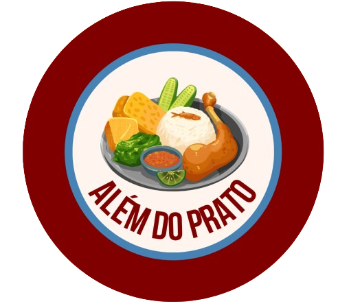

A seletividade alimentar é um comportamento caracterizado pela dificuldade persistente em aceitar determinados alimentos, resultando em uma alimentação restrita e pouco variada. Esse quadro é mais comum na infância, fase em que a criança está formando seus hábitos alimentares, mas também pode estar presente em adolescentes e adultos. Diferente de simplesmente “não gostar” de um alimento específico, a seletividade envolve uma recusa repetitiva que pode atingir grupos alimentares inteiros, como verduras, frutas, legumes ou proteínas.
A seletividade alimentar é um comportamento caracterizado pela dificuldade persistente em aceitar determinados alimentos, resultando em uma alimentação restrita e pouco variada. Esse quadro é mais comum na infância, fase em que a criança está formando seus hábitos alimentares, mas também pode estar presente em adolescentes e adultos. Diferente de simplesmente “não gostar” de um alimento específico, a seletividade envolve uma recusa repetitiva que pode atingir grupos alimentares inteiros, como verduras, frutas, legumes ou proteínas.
A seletividade pode ter origem sensorial, comportamental ou emocional. Fatores como sensibilidade à textura, experiências negativas com alimentos ou pressão excessiva durante as refeições podem contribuir para o problema.
Recusa frequente de alimentos novos, cardápio muito limitado, resistência intensa a experimentar sabores diferentes e preferência por poucos alimentos específicos são sinais comuns.
A longo prazo, a seletividade pode causar deficiências nutricionais, dificuldades no crescimento e até impacto social, como evitar refeições fora de casa ou em ambiente escolar.
Lidar com a seletividade alimentar exige paciência, consistência e um ambiente acolhedor durante as refeições. O primeiro passo é evitar transformar o momento da alimentação em um conflito. Pressões, punições ou chantagens podem aumentar ainda mais a resistência da criança e criar associações negativas com o ato de comer. É fundamental que as refeições ocorram em um ambiente tranquilo, com rotina estabelecida e sem distrações excessivas, como televisão ou celulares. A introdução de novos alimentos deve ser feita de maneira gradual. A criança pode ser incentivada a observar, tocar e sentir o cheiro do alimento antes de experimentá-lo. Pequenas porções e repetidas exposições ao mesmo alimento aumentam as chances de aceitação ao longo do tempo. Além disso, o exemplo familiar é essencial: quando pais ou responsáveis demonstram hábitos alimentares saudáveis e consomem variedade de alimentos, a criança tende a se sentir mais segura para experimentar. Também é importante envolver a criança no processo, como na escolha de alimentos no mercado ou na preparação de receitas simples. Isso aumenta o interesse e reduz a resistência. Nos casos em que a seletividade é muito intensa, persistente ou acompanhada de sinais de prejuízo nutricional, a orientação de um nutricionista ou profissional especializado pode ser necessária para avaliar a situação e propor estratégias adequadas, garantindo uma alimentação equilibrada e saudável.
Descubra a importância da educação alimentar na construção de hábitos saudáveis. Aprenda como pequenas mudanças podem gerar grandes impactos na saúde e no bem-estar.
Ler maisExplore como emoções influenciam a alimentação e como desenvolver uma relação mais equilibrada com a comida, baseada em consciência e respeito ao próprio corpo.
Ler mais